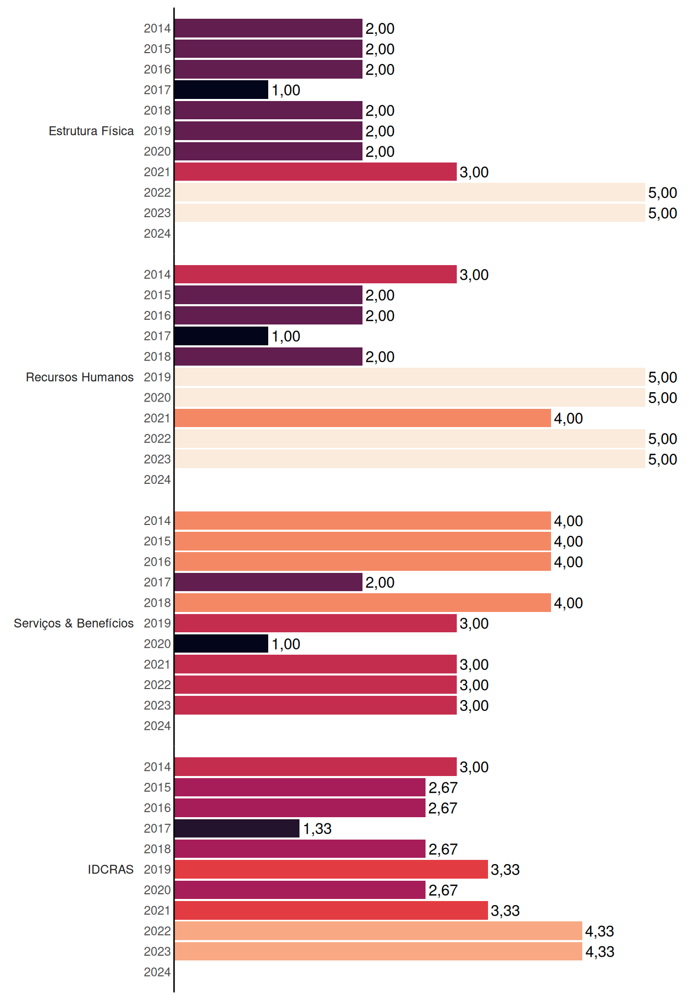

Narandiba
Relatório de Indicadores Censo SUAS 2024 do município de Narandiba, São Paulo
1 Introdução
Este relatório apresenta os resultados dos indicadores de desenvolvimento do Censo SUAS para o ano de 2024, no município de Narandiba, São Paulo, bem como a evolução desses indicadores desde 2014. Apresenta ainda os requisitos necessários para estar nos níveis mais baixos encontrados no Município em cada uma das dimensões de cada indicador, e os requisitos para atingir os níveis mais altos.
2 IDCRAS: Indicador de Desenvolvimento do CRAS
O Indicador de Desenvolvimento do CRAS (IDCRAS) é um indicador sintético que retrata o grau de desenvolvimento do Centro de Referência de Assistência Social (CRAS). Ele é composto por três dimensões: Estrutura Física, Recursos Humanos e Serviços & Benefícios. Em cada dimensão é atribuída uma nota de 1 a 5, de acordo com critérios indicativos do nível de desenvolvimento do CRAS, sendo 5 o nível máximo de desenvolvimento. O IDCRAS é a média das notas alcançadas nas três dimensões.
O Gráfico 1 mostra a evolução das médias do IDCRAS ao longo dos anos no município de Narandiba, São Paulo.
| Capacidade de até: | Quantidade |
|---|---|
| 2.500 famílias referenciadas | 0 |
| 3.500 famílias referenciadas | 0 |
| 5.000 famílias referenciadas | 0 |
3 IDCREAS: Indicador de Desenvolvimento do CREAS
O Indicador de Desenvolvimento do CREAS (IDCREAS) é um indicador sintético que retrata o grau de desenvolvimento do Centro de Referência Especializado de Assistência Social (CREAS). Ele é composto por três dimensões: Estrutura Física, Recursos Humanos e Serviços & Benefícios. Em cada dimensão, é atribuída uma nota de 1 a 5, de acordo com critérios indicativos do nível de desenvolvimento do CREAS, sendo 5 o nível máximo de desenvolvimento. O IDCREAS é a média das notas alcançadas nas três dimensões.
Narandiba não tem CREAS.
Lista de Abreviaturas e Siglas
ABNT: Associação Brasileira de Normas Técnicas
BPC: Benefício de Prestação Continuada
CRAS: Centro de Referência de Assistência Social
CREAS: Centro de Referência Especializado de Assistência Social
EV: Equipe Volante
IDConselho: Indicador de Desenvolvimento do Conselho Municipal de Assistência Social
IDCRAS: Indicador de Desenvolvimento do CRAS
IDCREAS: Indicador de Desenvolvimento do CREAS
IGD: Índice de Gestão Descentralizada
LA: Liberdade Assistida
MDS: Ministério do Desenvolvimento e Assistência Social, Família e Combate à Fome
MSE: Medidas Socioeducativas
PAEFI: Serviço de Proteção e Atendimento Especializado a Famílias e Indivíduos
PAIF: Serviço de Proteção e Atendimento Integral à Família
PIA: Plano Individual de Atendimento
PSC: Prestação de Serviços à Comunidade
RMA: Registro Mensal de Atendimentos
SAGICAD: Secretaria de Avaliação, Gestão da Informação e Cadastro Único
SNAS: Secretaria Nacional de Assistência Social
SUAS: Sistema Único de Assistência Social